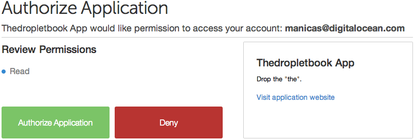

Siguiente: Google Developers Console Subir: OAuth Anterior: OAuth Índice General Índice de Materias
An excellent introduction to Oauth is in the article Introduction to OAuth (in plain English). by Ron Sobers
Many luxury cars come with a valet key. It is a special key you give the parking attendant and unlike your regular key, will only allow the car to be driven a short distance while blocking access to the trunk and the onboard cell phone.
Regardless of the restrictions the valet key imposes, the idea is very clever. You give someone limited access to your car with a special key, while using another key to unlock everything else.
As the web grows, more and more sites rely on distributed services and cloud computing:
The problem is, in order for these applications to access user data on other sites, they ask for usernames and passwords. Not only does this require exposing user passwords to someone else – often the same passwords used for online banking and other sites – it also provides these application unlimited access to do as they wish. They can do anything, including changing the passwords and lock users out.
OAuth provides a method for users (you) to grant third-party (parking attendant) access to their resources (your luxury car) without sharing their passwords (the key of your car). It also provides a way to grant limited access (in scope, duration, etc. the equivalent of not having access to the trunk or the onboard cell phone).
For example,
In OAuth, the client requests access to resources controlled by the resource owner and hosted by the resource server, and is issued a different set of credentials than those of the resource owner.
Instead of using the resource owner's credentials to access protected resources, the client obtains an access token - a string denoting a specific scope, lifetime, and other access attributes.
Access tokens are issued to third-party clients by an authorization server with the approval of the resource owner.
The client uses the access token to access the protected resources hosted by the resource server.
An entity capable of granting access to a protected resource. When the resource owner is a person, it is referred to as an end-user.
The server hosting the protected resources, capable of accepting and responding to protected resource requests using access tokens.
An application making protected resource requests on behalf of the resource owner and with its authorization.
The term " client" does not imply any particular implementation characteristics (e.g., whether the application executes on a server, a desktop, or other devices).
The server issuing access tokens to the client after successfully authenticating the resource owner and obtaining authorization.
From an application developer's point of view, a service's API fulfills both the resource and authorization server roles.
The authorization server may be the same server as the resource server or a separate entity. A single authorization server may issue access tokens accepted by multiple resource servers.

Before using OAuth with your application, you must register your application with the service.
This is done through a registration form
in the developer or API portion of the service's website, where
you will provide the following information (and probably details about
your application):
Application Name Application Website Redirect URI or Callback URLThe redirect URI is where the service will redirect the user after they authorize (or deny) your application, and therefore the part of your application that will handle authorization codes or access tokens.
Once your application is registered, the service will issue
client credentials in the form of a client identifier and
a client secret.
Client ID
is a publicly exposed string that is used by the service API to
identify the application, and is also used to build authorization URLs
that are presented to users.
Client Secret is
used to authenticate
the identity of the application to the service API when the application
requests to access a user's account, and must be kept private between
the application and the API.
Visit Google Developers Console
In the Abstract Protocol Flow above, the first four steps cover obtaining
an authorization grant and access token.
The authorization grant type depends on the method used by the application to request authorization, and the grant types supported by the API.
OAuth 2 defines four grant types, each of which is useful in different cases:
OAuth 2.0 is a version of the protocol which introduces different flows for web, mobile, and desktop applications. It also has the notion of token expiration (similar to cookie expiration), requires SSL, and reduces the complexity for developers by no longer requiring signing.
The authorization code grant type is the most commonly used because it is optimized for server-side applications, where source code is not publicly exposed, and Client Secret confidentiality can be maintained.
This is a redirection-based flow, which means that the application must be capable of interacting with the user-agent (i.e. the user's web browser) and receiving API authorization codes that are routed through the user-agent.
Now we will describe the authorization code flow:

This is the scary part. If the consumer were super-shady Evil Co. it could pop up a window that looked like the service provider but was really phishing for your username and password. Always be sure to verify that the URL you’re directed to is actually the service provider
First, the user is given an authorization code link that looks like the following:
https://cloud.digitalocean.com/v1/oauth/authorize?response_type=code&
client_id=CLIENT_ID&
redirect_uri=CALLBACK_URL&scope=read
Here is an explanation of the link components:
https://cloud.digitalocean.com/v1/oauth/authorize:
the API authorization endpoint
client_id=CLIENT_ID: the application's client ID (how the API identifies the application)
redirect_uri=CALLBACK_URL: where the service redirects the user-agent after an authorization code is granted
response_type=code: specifies that your application is requesting an authorization code grant
scope=read: specifies the level of access that the application is requesting
When the user clicks the link, they must first log in to the service, to authenticate their identity (unless they are already logged in).
Then they will be prompted by the service to authorize or deny the application access to their account.
Here is an example authorize application prompt:

This particular screenshot is of DigitalOcean's authorization screen,
and we can see that Thedropletbook App is requesting authorization for
read access to the account of manicas@digitalocean.com
Authorize Application, the service redirects the
user-agent to the application redirect URI, which was specified during the
client registration, along with an authorization code.
The redirect would
look something like this (assuming the application is dropletbook.com):
https://dropletbook.com/callback?code=AUTHORIZATION_CODE
Here is an example POST request to DigitalOcean's token endpoint:
https://cloud.digitalocean.com/v1/oauth/token?client_id=CLIENT_ID& client_secret=CLIENT_SECRET& grant_type=authorization_code& code=AUTHORIZATION_CODE& redirect_uri=CALLBACK_URL
If the authorization is valid, the API will send a response containing the access token (and optionally, a refresh token) to the application.
The entire response will look something like this:
{"access_token":"ACCESS_TOKEN",
"token_type":"bearer",
"expires_in":2592000,
"refresh_token":"REFRESH_TOKEN",
"scope":"read",
"uid":100101,
"info":{"name":"Mark E. Mark","email":"mark@thefunkybunch.com"}
}
Now the application is authorized! It may use the token to access the
user's account via the service API, limited to the scope of access,
until the token expires or is revoked.
If a refresh token was issued, it may be used to request new access tokens if the original token has expired
Here is an example of an API request, using curl. Note that it includes the access token:
curl -X POST -H "Authorization: Bearer ACCESS_TOKEN""https://api.digitalocean.com/v2/$OBJECT"Assuming the access token is valid, the API will process the request according to its API specifications.
If the access token is expired or
otherwise invalid, the API will return an invalid_request error.